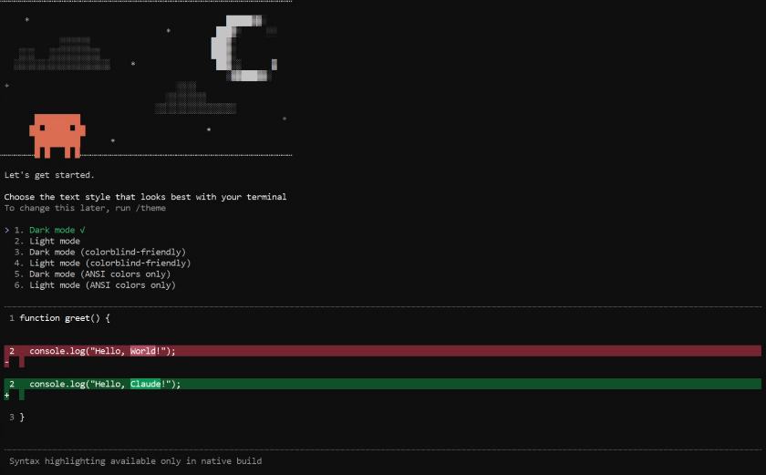

עקבו אחרי השלבים - ותגיעו למפגש מוכנים לחלוטין.
לפני שמתחילים
בחרו את מערכת ההפעלה שלכם - ההוראות יתאימו את עצמן:
Node.js הוא הבסיס ש-Claude Code רץ עליו. צריך גרסה 18 ומעלה.
נכנסים לאתר הרשמי ומורידים את הגרסה ל-Mac:
nodejs.org - לחצו על הכפתור "Get Node.js" (הכפתור הגדול באמצע).
אם יש לכם Homebrew מותקן:
נכנסים לאתר הרשמי ומורידים:
nodejs.org - לחצו על הכפתור "Get Node.js", הורידו את קובץ ה-.msi והריצו אותו.
חשוב: במהלך ההתקנה, ודאו שהאפשרות "Add to PATH" מסומנת. בלי זה, הטרמינל לא יזהה את הפקודות.
Terminal הוא חלון שחור שבו כותבים פקודות למחשב. זה הכלי המרכזי שנעבוד בו במפגש.
בחלון שנפתח, כתבו את הפקודה הבאה ולחצו Enter:
PowerShell הוא חלון כחול/שחור שבו כותבים פקודות למחשב. זה הכלי המרכזי שנעבוד בו במפגש.
בחלון שנפתח, כתבו את הפקודה הבאה ולחצו Enter:
אם מופיע מספר גרסה (18 ומעלה) - עברתם את השלב הזה.
Git מנהל גרסאות של קבצים. Claude Code צריך אותו כדי לעבוד עם פרויקטים.
ב-Mac רוב הסיכויים ש-Git כבר קיים. בדקו בטרמינל:
אם מופיעה הודעה על התקנת "Command Line Tools" - אשרו את ההתקנה וחכו שתסתיים.
חשוב: במסך "Adjusting your PATH" - בחרו באפשרות "Git from the command line and also from 3rd-party software".
זה הסוכן עצמו. ההתקנה לוקחת דקה.
צריך מנוי פעיל ב-claude.ai (תוכנית Pro - $20 לחודש, או Max - $100).
אם עדיין אין לכם מנוי - הירשמו כאן. בחרו בתוכנית Pro ($20/חודש).
בטרמינל שכבר פתוח (מהשלב הקודם), כתבו את הפקודה הבאה ולחצו Enter:
ב-Windows: אם מופיעה שגיאת הרשאות - פתחו את PowerShell כמנהל (Run as Administrator) ונסו שוב.
אחרי ההתקנה, כתבו בטרמינל את הפקודות הבאות (שורה אחרי שורה, Enter אחרי כל אחת):
בפעם הראשונה - ייפתח דפדפן לאימות עם חשבון Claude שלכם. אשרו את החיבור.
אם ההתקנה הצליחה, תראו מסך כזה בטרמינל:

רואים משהו דומה? מעולה - Claude Code מותקן ועובד! מעכשיו, בכל פעם שתפתחו את הטרמינל, פשוט כתבו claude ואתם בפנים.
ודאו שהכל עובד לפני המפגש.
claude עובד בטרמינל)
נתקלתם בבעיה? כנראה שמישהו כבר עבר את זה. הנה הפתרונות:
הסיבה: Node.js לא נוסף ל-PATH של המערכת.
פתרון ל-Windows:
פתרון ל-Mac: הפעילו מחדש את הטרמינל. אם לא עוזר - הריצו מחדש את ההתקנה מ-nodejs.org.
ב-Windows: פתחו PowerShell כ-Administrator (קליק ימני - "Run as Administrator").
ב-Mac: הוסיפו sudo לפני הפקודה:
פתרון 1: סגרו את כל חלונות הטרמינל ופתחו מחדש.
פתרון 2 (Windows): ודאו ש-npm global נמצא ב-PATH:
פתרון 3: התקינו מחדש:
הבעיה: Windows חוסם הרצת סקריפטים מטעמי אבטחה.
פתרון: פתחו PowerShell כ-Administrator והריצו:
אשרו עם Y ונסו שוב.
כש-Claude Code רץ בפעם הראשונה, הוא צריך לפתוח דפדפן לאימות.
פתרון: אם הדפדפן לא נפתח אוטומטית - חפשו בטרמינל קישור (URL) והעתיקו אותו ידנית לדפדפן.